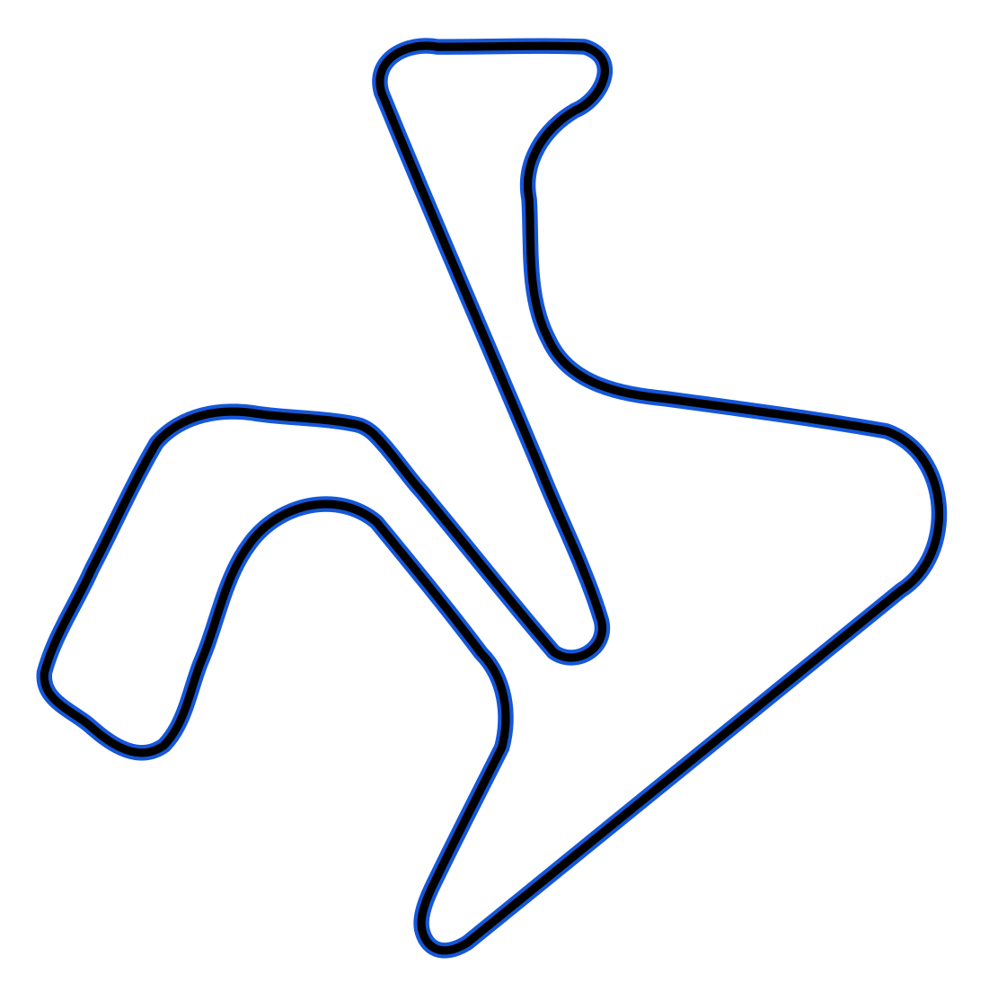

{kind=link}
Fastest clean lap
1'36.665 Marc Márquez
Spain · MotoGP
SPR
2025
Performance analysis · clean pace
Where Marc Márquez built the win.
The peak-lap gap was negligible. The race turned on an opening-lap gain and repeatable speed through the first half, concentrated in T1 and T3.

Best median
1'37.309 Marc MárquezTightest IQR
0.131 s Aleix EspargaróTop speed
300.8 Marco Bezzecchi · km/hPace distribution
Fastest was close. Typical pace was not.
Clean laps 2–12 · seconds
93Marc Márquez
97.309
73Alex Márquez
97.411
0.018 s
separated their fastest laps, but Marc's median was 0.102 s quicker. The result came from repeatability, not one exceptional lap.
Sector map
The advantage changed direction around the lap.
Marc minus Alex · median sector
T1−0.096Marc gain
T2+0.030Alex gain
T3−0.126Marc gain
T4+0.106Alex gain
| Rider | T1 | T2 | T3 | T4 |
|---|---|---|---|---|
| Marc Márquez | 24.259 | 14.248 | 28.957 | 29.822 |
| Alex Márquez | 24.355 | 14.218 | 29.083 | 29.716 |
Head-to-head
The race was won before Alex began closing.
Marc relative to Alex
Opening lap
−0.480 s
Immediate margin
Laps 2–6
−0.149 s/lap
Marc extends
Laps 8–12
+0.074 s/lap
Alex responds
Finish
−1.001 s
Marc ahead
| Metric | Marc Márquez | Alex Márquez |
|---|---|---|
| Fastest | 1'36.665 | 1'36.683 |
| Median | 1'37.309 | 1'37.411 |
| Mean | 1'37.291 | 1'37.338 |
| IQR | 0.622 s | 0.294 s |
| Theoretical best | 1'36.504 | 1'36.566 |
| Potential lost | 0.161 s | 0.117 s |
Data quality
Checked before interpreted.
Coordinate-aware PDF extraction
23Riders
250Numbered laps
225Valid laps
100%Sector completeness
Rider runs, laps, full laps and valid-lap counts reconciled with no sector-sum failures.
Conclusion
Peak speed did not decide Jerez.
Marc combined a decisive opening with stronger early-Sprint pace, particularly through T1 and T3. Alex was more consistent and marginally faster late, but the recovery began after the winning margin had already formed.
Timing describes what happened, not why. The source does not establish whether tyres, fuel, traffic, rider management or another cause produced the late-race change.